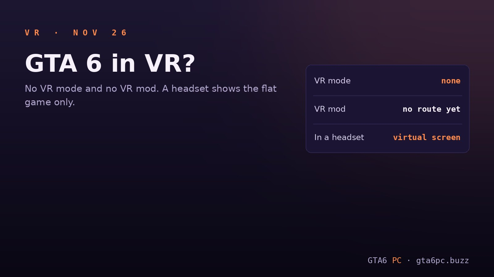

Will GTA 6 support VR on PC?
GTA 6 has no VR mode, no VR version and no headset support of any kind. Rockstar has announced nothing for headsets, and the only VR headset in the game's official material is a joke: a character wearing a 2019 Quest in the August Extended Look. A VR mod is no closer, because a mod needs a PC version to run on, and there is no PC version. What a headset can do today is show the flat game on a big virtual screen, and only if you already own a console.

The short answer: no VR anywhere
Rockstar's official GTA VI page lists two platforms, PlayStation 5 and Xbox Series X|S, and no headset. The pre-load post Rockstar published on November 10 set out what each console gets: a 30fps target, a sharper image and ray-traced shadows on PS5 Pro, Xbox Cloud Gaming on Xbox consoles, and Remote Play on PlayStation and Xbox. It says nothing about VR or headsets. The PlayStation Store listing carries no PS VR2 label, which Sony applies to games with genuine headset support. On the Xbox side the question answers itself at the hardware level, because Microsoft sells no VR headset for Series X|S and supports none. A VR mode on Xbox is not merely unannounced. On current hardware it is impossible.
The only headset in GTA 6 is a joke
The single piece of official footage fuelling the VR conversation is a gag. In Grand Theft Auto VI: An Extended Look, the 26-minute video Rockstar released on August 27, 2026 and captured in-game on PlayStation 5, a character turns up around the 17:27 mark wearing what reads as a 2019 Quest, fabric front and all, at the expense of people who wear headsets indoors. Road to VR and VR.org both describe the prop as modelled on the original Oculus Quest. Rockstar did not model a Quest 3 or a Vision Pro. It reached back to the 2019 headset, the silhouette a general audience reads as slightly embarrassing. Leonida is satire, and the headset is part of the joke, not a feature announcement. There is no sign of actual VR support in GTA 6 anywhere in Rockstar's material.
Why there is no VR mod yet
A VR mod needs a version of the game that modders can open up. In practice that means PC, and GTA 6 exists only on PS5 and Xbox Series X|S, with no PC version announced. Any download promising a GTA 6 VR mod today is not real, so do not run it. Our mods guide explains what modders are actually waiting for.
The precedent says the wait is long. GTA V reached consoles in September 2013 and PC in April 2015, about nineteen months later, and its VR mod came years after that, from Luke Ross, who funds his R.E.A.L. VR mods through Patreon. In July 2022 Take-Two, Rockstar's parent company, sent a DMCA notice over his GTA V, Red Dead Redemption 2 and Mafia VR mods, and Road to VR reported that he took them down to comply. CD Projekt did the same to his Cyberpunk 2077 mod in January 2026, which PC Gamer covered. So even after a PC version arrives, a GTA 6 VR mod would need years of work, and it would face a publisher that has already acted against VR mods once.
Rockstar and VR: a short history
Rockstar has shipped exactly one VR game. L.A. Noire: The VR Case Files, seven cases from L.A. Noire rebuilt for roomscale VR, launched on Steam on December 15, 2017. It has not shipped another. Red Dead Redemption 2 shipped without VR. GTA 6 ships without it.
The other GTA in VR never shipped either. Meta announced Grand Theft Auto: San Andreas for Quest 2 in October 2021, and UploadVR reported on August 15, 2024 that Meta had put it on hold indefinitely. In August 2026 a modder released an early San Andreas VR source kit for Quest 3 that ships no game files and needs your own copy of the game. That is the closest thing to a GTA VR release in five years, and it is a fan kit for a 2004 game, not a Rockstar product.
How to play GTA 6 in a headset today
Every route shows the flat game on a virtual screen, and every route starts with a console you own. None of this is VR, and none of it is a reason to buy a headset for GTA 6. If you already own one, it is a private screen bigger than the TV.
| Route | What you need | Extra cost |
|---|---|---|
| PS VR2 Cinematic Mode | PS5 and PS VR2 | None |
| Quest plus Xbox Remote Play | Xbox Series X|S, a Quest, a gamepad, the free Xbox app | None if you own a gamepad |
| Quest plus PS5 via HDMI Link | PS5, a Quest, a USB capture card, HDCP off on the PS5 | The capture card |
Each route puts a 1080p picture in the headset. PS VR2 owners have the simplest route: Cinematic Mode needs no setup and runs over the headset's own cable, though Sony turns the TV off while it is in use. On a Quest, Xbox Remote Play is free, and it worked with GTA 6 from day one. The PS5 route goes through Meta's HDMI Link app and a capture card, and the card shows nothing until HDCP is switched off in the PS5's HDMI settings. The difference between consoles mostly disappears at 1080p, so pick the route by the console you own.
Cloud streaming will not help a headset
Microsoft's Xbox Wire post puts GTA 6 on Xbox Cloud Gaming from day one on Xbox One and Xbox Series X|S, using Series S graphics settings, and names no other devices. Windows Central, which played it over the cloud at launch, found it blocked on PC and mobile. The Xbox app on Quest is not on Microsoft's list, although Xbox's page for VR headsets says the app can stream select games you own. Microsoft has not said whether GTA 6 will become one of them. Until then, a Quest needs a console in the house. Our cloud gaming guide covers the console-only limits in full.
Sony added cloud streaming on November 23. GTA 6's PlayStation Store page now lists streaming support, and owners with PS Plus Premium can stream it from Sony's servers to a PS5 or a PlayStation Portal. You still have to own the game. Neither company lists a Quest, so the answer for a headset has not changed: it starts with a console you own.
What would have to change
Three things would have to happen, in order. First, Rockstar would have to announce a PC version. Take-Two's chief executive has said that information about new versions always comes from Rockstar, so the announcement will come from there or not at all. Our release date page tracks the status. Second, modders would need years with that PC version to build a VR mod on the scale of Luke Ross's GTA V work. Third, Take-Two would have to leave it alone, which its July 2022 DMCA notice makes doubtful.
There is also a hardware reason to be sceptical. GTA 6 runs at 30 frames per second on every console, PS5 Pro included, with no 40 or 60fps mode. Rockstar told Kotaku the Pro's processor is not powerful enough to run the game's complex simulation at higher frame rates. VR needs high, steady frame rates to feel right, and a game locked at 30fps on consoles would need a PC version with serious headroom before a headset made sense. Until a PC version exists, there is no VR route of any kind, and the honest advice is to plan for a flat screen.
Quick answers
Does GTA 6 have VR?
No. GTA 6 came out on November 19, 2026 for PlayStation 5 and Xbox Series X|S as a flat game, and Rockstar has announced no VR mode, VR version or headset support. The PlayStation Store listing carries no PS VR2 label.
Is there a GTA 6 VR mod?
No. A VR mod needs a version of the game modders can open up, in practice a PC one, and GTA 6 has no PC version announced. Any download promising a GTA 6 VR mod today is not real.
Can I play GTA 6 on a Meta Quest 3?
Not in VR, but on a big virtual screen, yes, with a console you own. Xbox owners can stream it with Remote Play to the free Xbox app on Quest. PS5 owners can feed it through Meta's HDMI Link app and a USB capture card, with HDCP switched off.
Can I play GTA 6 on PS VR2?
On a virtual screen, yes. PS VR2 Cinematic Mode shows any non-VR PS5 game on a 1920x1080 virtual screen with no setup. The TV goes dark while it is on. It is not VR support.
Will GTA 6 ever get VR?
Nothing official points that way. Rockstar has shipped one VR game, L.A. Noire: The VR Case Files in 2017, and Meta's GTA San Andreas for Quest has been on hold indefinitely since August 2024. A VR mod would need a PC version first, then years of modding work, and Take-Two has sent DMCA notices over VR mods before.
Last updated . We update this page when Rockstar announces anything new.